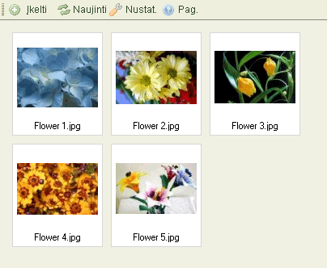
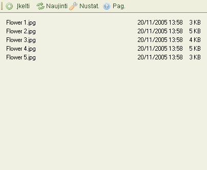

Failus per鱉i贖r?ti galima dviem skirtingais b贖dais, priklausomai nuo CKFinder nustatym鑒 (鱉i贖r?ti "Nustatymus"). 鬚emiau yra parodyti skirtumai tarp "Miniati贖r鑒" "S?ra禳鑒"vaizdavimo tame pa?iame segtuve:


Tam, kad pasirinktum?te fail?, padarytum?te j蠕 "aktyviu" CKFinder'yje, tiesiog spustel?kite ant jo. Kas kart u鱉vedus pelyt? ant failo, jis nusida鱉o kita spalva. Pasirinktas failas nusida鱉o kita spalva, kuri da鱉niausiai b贖na m?lyna.
I禳pl?stin?s operacijos yra pasiekiamos per "Kontekstin蠕 meniu ". Galimi 禳ie pasirinkimai:
D?mesio: Kai kurie kontekstinio meniu mygtukai gali b贖ti i禳jungti, priklausomai nuo CKFinder nustatym鑒.
Failui pasirinkti, nuspauskite mygtuk? "Pasirinkti"
Failo per鱉i贖rai nar禳ykl?je, spustel?kite "Per鱉i贖r?ti" mygtuk?. Ne vis鑒 r贖禳i鑒 failai gali b贖ti matomi nar禳ykl?se, ta?iau 禳i galimyb? yra labai patogi paveiksliukams, tekstui ir PDF failams. Kituose atvejuose, nar禳ykl? papra禳ys J贖s鑒 atverti fail? su tam tikra programa.
Failui atsisi鑒sti, spustel?kite "Atsisi鑒sti mygtuk?. Nar禳ykl? papra禳ys J贖s鑒 pasirinkti viet? 蠕 kuri? i禳saugoti atsi鑒st? fail? 蠕 kompiuter蠕.
Failui pervadinti, tiesiog nuspauskite "Pervadinti" mygtuk? kontekstiniame meniu. Dialogo lentel?, kurioje bus failo pavadinimas, atsiras, klausianti naujo pavadinimo. Tiesiog 蠕ra禳ykite ir patvirtinkite.
Ne visi simboliai gali b贖ti naudojami pavadinimuose, d?l tam tikr鑒 apribojim鑒 kurie yra
sistemose kuriose paleistas CKFinder. Pvz.: 禳ie simboliai negali b贖ti naudojami papk?se
ir fail鑒 pavadinimuose:
\ / : * ? " < > |
D?mesio: pervadindami failus, nuorodos 蠕 juos, esan?ios kituose puslapiuose, bus pa鱉eistos tod?l failai buv? tame segtuve bus nepasiekiami i禳 i禳orini鑒, prie禳 tai nustatyt鑒 nuorod鑒. Tod?l, atsakingai naudokit?s 禳ia funkcija.
Failui i禳trinti, spauskite "I禳trinti" mygtuk? kontekstiniame meniu. Patvirtinimo prane禳imas atsiras, tam, kad b贖t鑒 patvirtinta operacija.
D?mesio: i禳trynus failus, nuorodos 蠕 juos, esan?ios kituose puslapiuose, bus pa鱉eistos tod?l failai buv? tame segtuve bus nepasiekiami i禳 i禳orini鑒, prie禳 tai nustatyt鑒 nuorod鑒. Tod?l, atsakingai naudokit?s 禳ia funkcija.